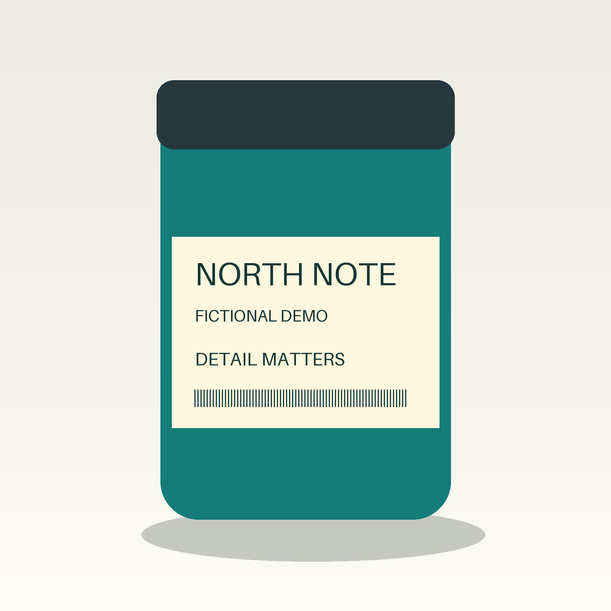
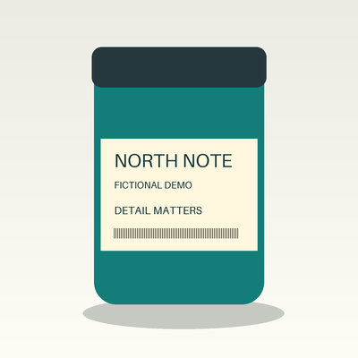
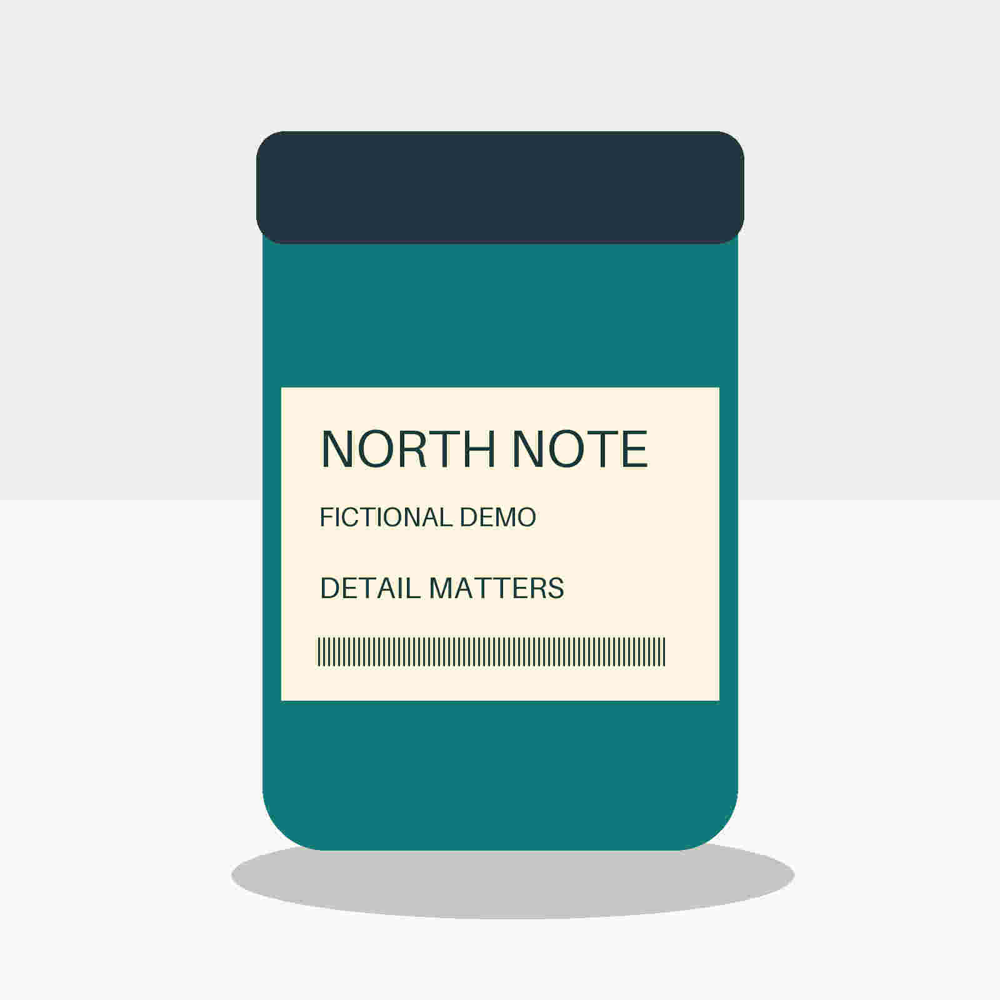

Visual field note · October 12, 2026
Blurry product images?
Check pixels before compression.
A high-quality JPEG can still look soft when it is too small for the space it fills. Start with the image the browser actually displays.
Watch the 44-second visual explanation →
This is a controlled example using an original fictional package diagram. It is not a product photograph, merchant-store test or guaranteed fix. The account owner is not credited as its author.
Two settings. Different problems.

Enough pixels
1600 × 1600 · JPEG quality 85
94,358 bytes
This encoding retains more fine detail than the smaller variant.
Open full-size example

Too few pixels
400 × 400 · JPEG quality 85
14,442 bytes
Enlarging this version cannot restore detail removed by downscaling.
Open 400-pixel example

Lossy encoding
1600 × 1600 · JPEG quality 10
44,580 bytes
The dimensions remain, but aggressive encoding affects fine detail.
Open full-size example
Compare the same label detail in the video or open the files at equal display size. Quality numbers are encoder-specific; they are not interchangeable between every tool.
A quick diagnostic
- Keep the original. Check whether it is sharp before changing a whole catalog.
- Inspect what is delivered. In browser developer tools, inspect the image element's
currentSrc,srcsetandsizes. Open the selected resource and check its actual pixel dimensions. A width in a URL is only a clue. - Compare pixels with display size. An image shown at 800 CSS pixels on a 2× display suggests about 1600 source pixels as a useful adequacy check—not a universal target or guaranteed fix.
- Check the theme before recompressing. If the delivered source is undersized, inspect the responsive candidates and layout settings. Back up the theme before any authorized edit.
- If dimensions are adequate, check other causes. Compare source blur, delivered encoding, CSS scaling and cropping. Test one image first.
The smaller-file surprise
Our original lossless diagram PNG was 28,431 bytes—smaller than either full-size JPEG. Text-heavy graphics can behave differently from photos. Switching formats blindly can increase file size.
| Measured file | Dimensions | Encoding | Bytes |
|---|---|---|---|
| Original diagram | 1600 × 1600 | PNG, lossless | 28,431 |
| Higher-quality JPEG | 1600 × 1600 | Pillow Q85, subsampling 0 | 94,358 |
| Smaller JPEG | 400 × 400 | Lanczos resize, Q85 | 14,442 |
| Aggressive JPEG | 1600 × 1600 | Pillow Q10, subsampling 0 | 44,580 |
There is no universal under-100-KB rule. Consider display needs, upload limits and actual page performance. A smaller uploaded file alone does not prove that the live page is sharper or faster.
Use existing free tools
Squoosh is an open-source browser comparison tool. It is referenced here, not claimed tested in this experiment. Our examples were actually encoded with Pillow; no new compressor was built.
Have a visual explanation in mind?
Project inquiries about a possible custom visual explanation are welcome. Describe the audience and the question you need to explain. Availability, feasibility, scope, price, deadline and payment would be confirmed separately; this page does not accept an order.
Need help understanding a blurry image on a public web page? A possible desktop-only image diagnostic can be discussed separately. Send the public URL and a short description of the symptom. A scoped report could compare the selected image file's actual pixels with its displayed size and explain the limits of the result. No private images, account access, theme changes, guaranteed fix or sales improvement are included. Feasibility, scope, price, deadline and payment would be confirmed before any work is accepted.
Use a non-sensitive description. Do not send private customer data or account credentials.
Sources and limits
- Merchant discussion, September 25–28, 2026: first-hand problem and suggested diagnoses; no final fix or paid demand established.
- Shopify image documentation and product-media requirements: image handling and presentation. Requirements can differ by media category.
- Squoosh repository and Pillow JPEG documentation: existing tools and encoder settings.
Checked October 12, 2026. No customer store or private photos accessed. No affiliation with Shopify, Squoosh or Pillow. No sponsorships, affiliate links, paid endorsements or guaranteed sales/SEO benefits. This page is an AI-produced project resource, not the account owner's personal writing or professional experience.